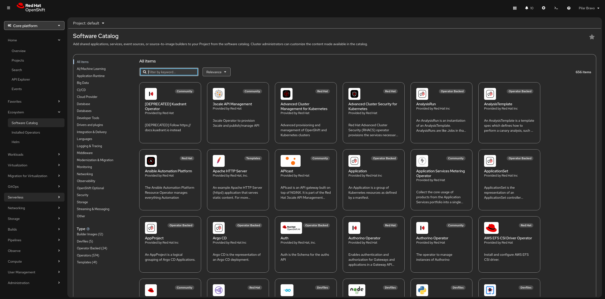

The Software Catalog
The Software Catalog is the OpenShift Container Platform web console interface that allows cluster administrators and authorized users to discover, select, and install software on their cluster. Go to Ecosystem → Software Catalog to access the software catalog.

The software catalog is organized into several categories:
-
Operators: Operators are the building blocks of the software catalog. They are the components that are used to manage the software on the cluster.
-
Certified Operators: Certified operators are the operators that are certified by Red Hat to be used on the cluster.
-
Community Operators: Community operators are the operators that are not certified by Red Hat to be used on the cluster.
-
Other: Other are the operators that are not certified by Red Hat to be used on the cluster.
Here is a breakdown of the core advantages it brings to your workflow:
Self-Service Empowerment
The biggest win is autonomy. Developers can provision databases, languages, and services without opening a ticket for the infrastructure team.
-
Speed: Provisioning a PostgreSQL database or a Node.js runtime takes seconds.
-
Guardrails: While it feels like total freedom for the developer, the admins still control what appears in the catalog, ensuring everything stays within company policy.
Standardized Templates
The catalog uses Templates and Helm Charts to ensure consistency across the organization.
-
No "Snowflakes": Every developer deploying a specific service uses the same validated configuration.
-
Reduced Errors: Since the deployment logic is pre-baked into the template, the risk of manual configuration errors (like forgetting a persistent volume or an environment variable) is significantly lowered.
Broad Ecosystem Integration
The catalog isn’t just for Red Hat products; it aggregates resources from multiple sources:
-
OperatorHub: Access to sophisticated, managed services (like MongoDB or Redis) that handle their own updates and backups.
-
Helm Charts: Direct integration with the massive Kubernetes Helm ecosystem.
-
Source-to-Image (S2I): Allows you to point the catalog at a Git repository; OpenShift then builds the container image and deploys it automatically.